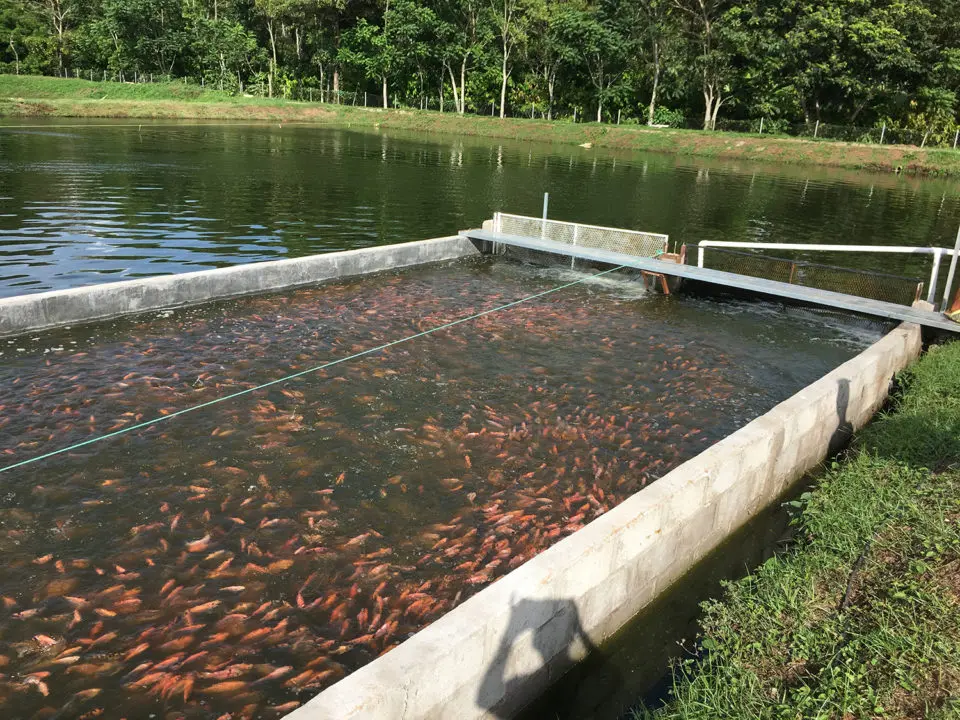

Estanques
Contamos con estanques tecnificados para la cría controlada de especies piscícolas.

Alimentación
Utilizamos alimento balanceado que garantiza un crecimiento saludable de los peces.

Producción
Nuestra producción está orientada al consumo local y al desarrollo comunitario.